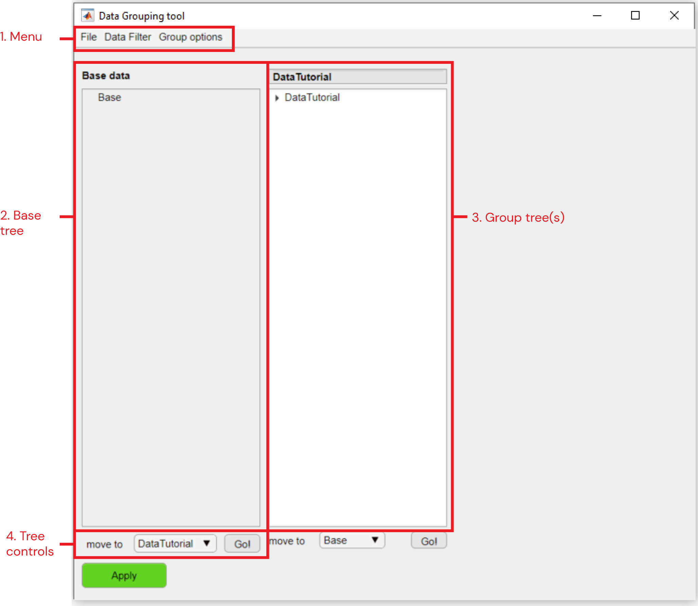

This tool is launched through the options panel of the Analysis tab of the umIToolbox app. The Data grouping tool provides an graphical interface that allows the creation of experimental groups. Once the groups are created, they can be saved to a .mat file for later use.
This documentation provides a description of the elements from the tool's interface. Check the tutorial on how to create groups for a step-by-step procedure.

Main components of the Data grouping tool interface
This is the source tree containing the project's objects. Once the tool is launched, the base tree is populated with the elements that are not shown in the object tree in the umIToolbox app.
One or more object trees containing the grouped elements. The group name (tree title) is editable.
Use these controls to move the tree elements between trees. To move elements, highlight the objects, select the target tree from the dropdown menu and click on the Go! button.
Note
To finish the creation of groups and apply the changes in the main app (umIToolbox), click on the Apply button!